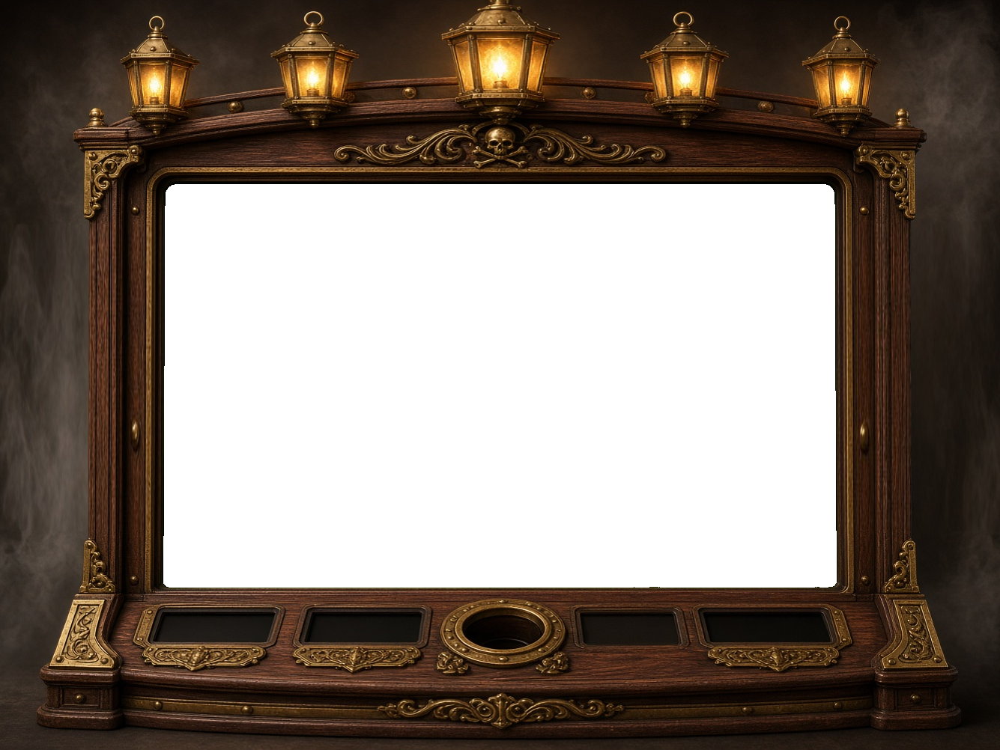

Kopej na ostrově, dokud nenarazíš na lebku. Každý poklad se přičte k výhře.
Pirátská vlajka (WILD) se objevuje jen na válcích 2, 3 a 4, nahrazuje všechny symboly kromě Mapy pokladu a vždy se roztáhne přes celý válec.
Mapa pokladu (SCATTER): 3 a více kdekoliv spustí 10 volných otáček (lze znovu spustit +10). Násobič začíná na x1 a po každé výherní volné otáčce roste o +1. Scatter platí 3× = 1×, 4× = 10×, 5× = 50× celkové sázky.
Vykopej poklad: 3 Truhly kdekoliv na válcích 1, 3 a 5 (v základní hře) spustí bonusovou hru. Vybírej místa, dokud nenajdeš lebku (3 lebky, 9 pokladů).
Hraje se na 20 pevných výherních liniích zleva doprava. Výplaty v tabulce jsou v kreditech pro aktuální sázku.
Útok krakena: náhodně v základní hře (přibližně 1× za 70 otáček) chapadlo krakena promění 3–6 náhodných pozic na válcích 2–5 v symboly WILD (nerozšiřují se). Otáčka se poté vyhodnotí bez dalšího poplatku.
Přílivová vlna: po nevýherní otáčce v základní hře může (asi v 1 z 50 případů) přes válce proplout pirátská loď. Vlna smete všechny válce a následuje bezplatné opakované roztočení se zaručenou výhrou.
Jackpot Kapitánova truhla (mystery progresivní): 4 úrovně – Bronz, Stříbro, Zlato, Diamant (výchozí hodnoty 20×, 100×, 500× a 2500× minimální sázky). Z každé sázky jde 1 % do jackpotů. Při každé otáčce základní hry mohou na válcích 1, 3 a 5 přistát tři zlaté jackpotové truhly (šance roste s výší sázky). Jakmile přistanou všechny tři, scéna jackpotu se spustí sama: lucerny zablikají, truhla se otevře, vytryskne poklad a výhra (MINI = Bronz, MINOR = Stříbro, MAJOR = Zlato, GRAND = Diamant) se připíše do pole VÝHRA. Hráč nic nevybírá; animaci lze zkrátit jen tlačítkem START nebo mezerníkem.
Celková teoretická návratnost (RTP) ≈ 96,2 % (včetně jackpotu), volatilita střední.
Demo režim: tlačítko DEMO nebo klávesy V = Přílivová vlna, K = Útok krakena, J = Jackpot (střídá MINI → MAJOR → GRAND), F = Volné otáčky, B = Vykopej poklad, T = Turbo, mezerník/START během točení = okamžité zastavení (přeskočí i animace výhry) – funkce se spustí při další otáčce (také přes adresu, např. index.html?demo=vlna).